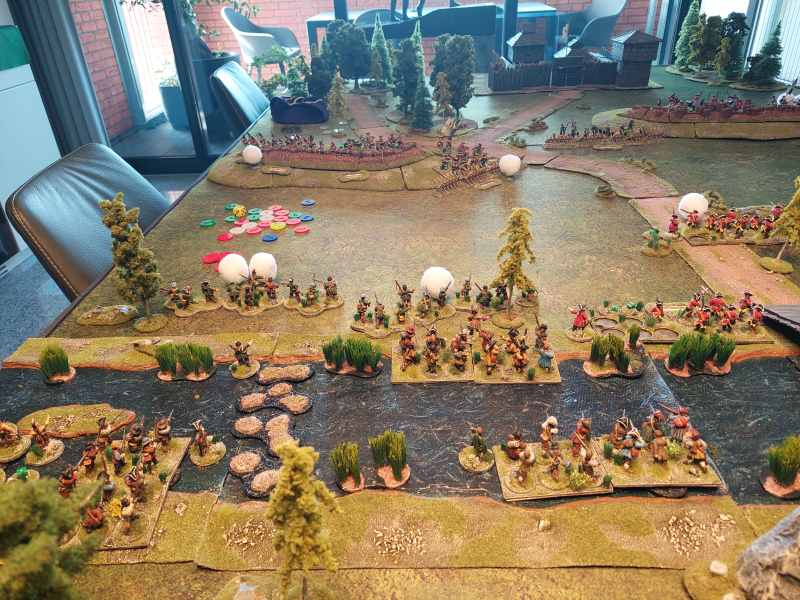
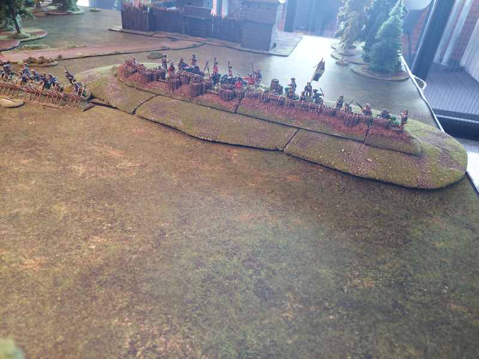

Sharp Practice (SP), originally released in 2008, is a large scale skirmish game based on leader figures, command&control and the exploits of the literary heroes of the horse and musket era. A typical game will feature 50 to 120 figures a side and a handful of leaders. In 2016 SP2 has come around in a beautiful soft-cover, full-colour book of 120 pages.
Some picture of a recent actual game:
 To give some insight on how it's played see the youtube video:
A game can easily last 8 hours